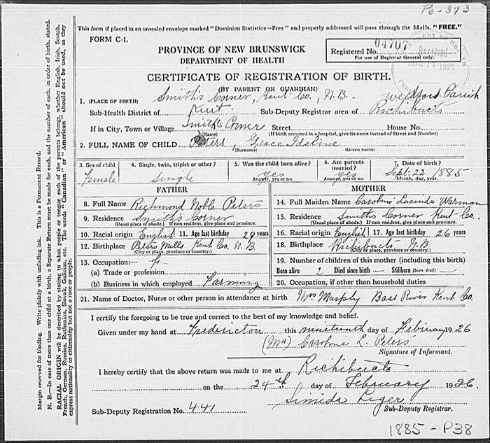

Grace Idaline Peters 1885 - 1956
[ Home ] | [ Calendar ] | [ Surnames Index ] | [ Census Index ] | [ Family History ]The 2nd of 7 children of Richmond Peters (a farmer) and Caroline Warman, Grace Peters, the third cousin twice-removed on the father's side of Nigel Horne, was born in Smiths Corner, Kent, New Brunswick, Canada on Sep 22, 18851,2,3,4,5,6,7,8.
During her life, she was living in Weldford, Kent, New Brunswick, Canada on May 28, 18911; in New Brunswick in 19019; in York, New Brunswick, Canada in 19112; and in Douglas, New Brunswick on Jun 1, 19213.
She died on Feb 15, 19566 and was buried in Saint Marys, New Brunswick after Feb 15, 19566.
Parents
- Richmond Noble was born on May 9, 1856
- Caroline Lucinda was born on Mar 17, 1859
Citations
- 1891 Census of Canada Ancestry.com Operations Inc (Marital Status: SingleRelation to Head of House: Daughter)
- 1911 Census of Canada Online publication - Provo, UT, USA: Ancestry.com Operations Inc, 2006. .Original data - Library and Archives Canada. Census of Canada, 1911. Ottawa, Ontario, Canada: Library and Archives Canada, 2007. http://www.collectionscanada.gc.ca/databases/census-19 (Marital Status: SingleRelation to Head of House: Daughter)
- 1921 Census of Canada Ancestry.com Operations Inc (Marital Status: SingleRelation to Head of House: Sister)
- Acadia, Canada, Vital and Church Records (Drouin Collection), 1670-1946 Ancestry.com Operations Inc
- Canada Census 1891 - Findmypast
- Canada, Find A Grave Index, 1600s-Current Ancestry.com Operations, Inc.
- New Brunswick Birth And Baptism Index 1769-1899 - Findmypast
- New Brunswick, Select Births and Baptisms, 1819-1899 Ancestry.com Operations, Inc.
- Canada Census 1901 - Findmypast (was the daughter of the head of the household)
Media
Grace Ideline Peters - birth

Canada Census 1901 - CAN/CENSUS/1901/00742758
New Brunswick Birth and Baptism Index 1769-1899 - R_684923110
New Brunswick Birth and Baptism Index 1769-1899 - R_684906405
Canada Census 1911 - CAN/CENSUS/1911/01556803
Family Tree

Generated by ged2site. Last updated on Jun 11, 2024